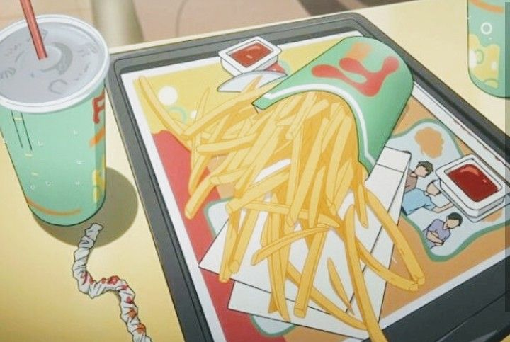

Fries

Description
Fries are chopped potatoes, deep fried, then served with ketchup.
Ingredients
- Potatoes
- Cooking oil
- Salt
Steps
- Peel and cut the potatoes into evenly sized sticks or wedges.
- Heat cooking oil in a deep fryer or a large skillet over medium-high heat.
- Carefully add the potato sticks to the hot oil and fry them until golden brown and crispy, then remove them from the oil and drain on paper towels. Optionally, season with salt to taste before serving.